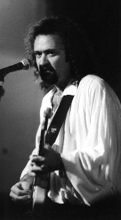

(блюз для слабослышаших)
(типа никак не решит. идти ему к року или в блюз)
(4 июня 1957, Atlanta, Ga)
Американский гитарист, певец. 
Родился в Атланте (Джорджиа), детство прошло в южной Флориде. Гитару взял в руки в семилетнем возрасте. Дипломированный историк Оксфордского университета. (Этот блюзмэн - из адвокатской семьи, нарушивший давние семейные ноториальные традиции. О его круге: в правовой школе в Emory он учился вместе с Peter Buck, основателем REM. П.Бак, кстати, принимал участие в записи альбома Эллиса 1992г.)
Профессиональную музыкальную карьеру начал, присоединившись к группе ALLEY CATS, игравшей в местных барах. (В этой же группе играл бассист Preston Hubbard, прославившийся как участник ROOMFUL OF BLUES и FABULOUS THUNDERBIRDS.)
Блюз открыл через популярные в 60-х группы "британского вторжения": ANIMALS, ROLLING STONES и пр. Утверждает, что решение стать блюзмэном принял в 14-летнем возрасте на концерте BB KING'а: Король блюза порвал струну и сменил ее, не останавливая песню и не теряя ритм; эту струну BB KING передал подростку в первом ряду - им и был Тинслей Эллис, который до сих пор хранит ее как свой блюзовый талисман.
В 1981г. вместе с вокалистом CHICAGO BOB (Robert NELSON) организовал блюзбэнд The HEARTFIXERS ("Ремонтники сердца" - название выбрано по блюзу Albert Collins). За 6 лет для независимой фирмы Landslide группа записала 4 альбома , которые принесли Эллису первую известность за пределами его штата. Альбом 1984г. записан с вокалистом NAPPY BROWN, звездой ритм-энд-блюза в 50-х и госпелл в 60-х.
Альбомом 1986г. дебютировал как вокалист. Обретя уверенность в своих возможностях солиста, покинул The HEARTFIXERS. (Хотя время от времени и сейчас выступает и записываестя с этой группой).
Пленку с записью его следующего - сольного - альбома для Landslide Records услышал президент фирмы "ALLIGATOR" Bruce IGLAUER. "Я был поражен, - говорит Иглауэр, - я никогда прежде не слышал Тинсли Эллиса, но он и его группа играли, словно за их плечами уже было огромное международное признание. Меня подкупила не только его яростная энергетика, но и его чувство вкуса и исполнительская зрелость. Он не просто отыгрывал набор скоростных "ликов". Его музыка была полна эмоций. В ней была мощь рока, но она воспринималась как блюз". "Alligator", обладавший хорошо налаженной системой дистрибуции, издал дебютный сольный альбом Эллиса "Georgia Blue" с пометкой "Продукция Landslide". Позже были переизданы еще два альбома из записанных The HEARTFIXERS. Т.Эллис подписал постоянный контракт с "Alligator".
Последовавшие альбомы демонстрируют продолжающиеся поиски стиля, и, хотя заметно тяготение к блюз-року ("Мой блюз - для плохослышащих"), поиски не закончены.
В 1996г. в турне Robert CRAY Тинсли Эллис открывал шоу сольными аккустическими выступлениями!
До своего прорыва к успеху, Johnny LANG открывал концерты Эллиса, и в свой популярный альбом включил медленный блюз его сочинения: "A Quitter Never Wins".
В интервью 1998г. Эллис сказал, что на концертах играет на "1966 Gibson ES 345" и сделанном по заказу Stratocaster через старинный усилитель Fender. Давно пользуется метталическим слайдом "Chrome Dome" компании Latch Lake (любит тон стеклянного слайда, как у Bonnie Raitt или Duane Allman, но "металл" оказался ему более "к пальцу")
Еще цитаты из интервью Tinsley Ellis.
The Heartfixers (Southland LP, 1982)
Live At The Moonshadow (Landslide LP, 1983)
Tore Up (Landslide LP, 1984), (переиздано на Alligator CD, 1990) Cool On It (Landslide LP, 1986), (переиздано на Alligator CD, 1991)
Georgia Blue (Alligator LP, 1988)
Fanning The Flames (Alligator LP, 1989)
Trouble Time (Alligator CD, 1992) The Big Chicken (336k) Storm Warning (Alligator CD, 1994) The Sun Is Shining (477k) Fire It Up (Alligator CD, 1997) - I Walk Alone (415k)Куда пойти в сети?
http://members.aol.com/SFGILTEDGE/tinsleyellis.html
- фотки с концерта '95
www.bealestreetbluesphotos.com/tinsleyellis2.html
- --''-- '98
www.alligator.com/artists/19/bio.html - у Аллигатора
www.b-side-blues.com/ce/ellis/ -
дом.страница, хомапейж